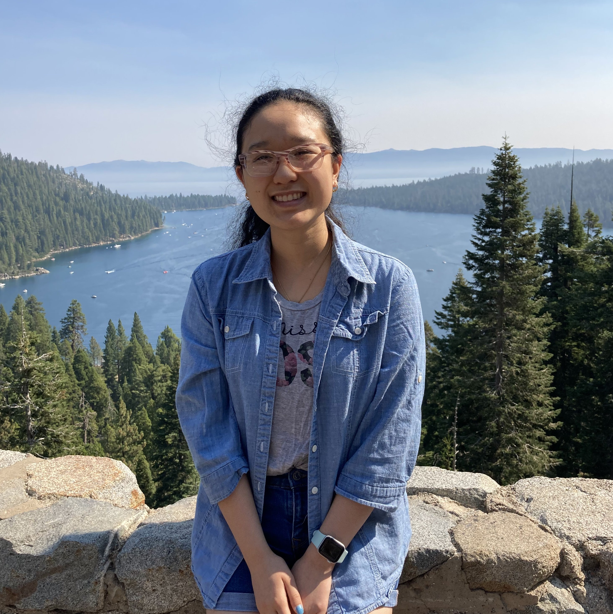

About Us
FCSN Parent Organization Mission Statement
FCSN’s mission is to help individuals with special needs and their families find love, hope, respect, and support through integrated community involvement.
We strive to create a secure community in which individuals can learn, grow, and interact.
http://fcsn1996.org/
UC Davis Branch
Friends of Children with Special Needs at UC Davis works closely with local non-profit organization Friends of Children With Special Needs to provide students with volunteer and
leadership opportunities. Our club is dedicated to channeling hope, support and awareness towards the special needs community. We work closely with FCSN to bridge the gap between
the neurotypical and the special needs community. We also organize fundraisers for children with special needs in different parts of the world to support them in their education.
Above all, we strive to reduce the stigma surrounding the special needs community and to encourage strong, loving bonds between the special needs community and the society as a whole.
Board Members

Hello! My name is Erica Chiu, and I’m the President of FCSN Davis. I have been volunteering at East Bay FCSN for 3 years. I'm excited to create fun and impactful events for the club! During my free time, I like to bake desserts and drink boba.
Erica Chiu
PRESIDENT
Third Year - Human Biology

Hi hello! I’m Ember. As your VP for the FCSN at UC Davis Club, I’m excited to meet everyone – and make the best out of this strange, apocalyptic year. Since elementary school, I’ve interacted with children with special needs, although not specifically through FCSN. My hobbies during shelter-in-place: playing violin, reading, muffin baking, listening to music, and binging YouTube.
Ember Hung
VICE PRESIDENT
Third Year - Human Biology

Hi! My name is Ayushi Ambekar and I’m one of the public relations officers. I’ve been volunteering at FCSN for the past 4 years and really love working with the special needs community! In my free time, I enjoy reading and playing video games! I’m looking forward to a fun year with you all!
Ayushi Ambekar
CO-PUBLIC RELATIONS OFFICER
Third Year - Computer Science

Hello!! My name is Julia Pan and I am serving as one of the Public Relations Officers for FCSN Davis! I was born and raised in Davis, teaching tennis & gymnastics through local special needs organizations for the last 5 years. Whenever I have time, I love to play tennis, paint landscapes, and take my dog on adventures. Can’t wait to meet everyone!
Julia Pan
CO-PUBLIC RELATIONS OFFICER
Third Year - Biological Sciences, Managerial Economics

Hey guys! I’m Sasha and I am the financial officer of FCSN at UC Davis. I hope to pursue a career in child psychiatry in the future. I have been volunteering at both FCSN South Bay and East Bay throughout high school and am excited to continue. Some of my other hobbies include all types of art, swimming, watching Netflix, and listening to music. I look forward to meeting everyone!!
Sasha Afroz
FINANCIAL OFFICER
Second Year - Psychology, Human Rights and Public Health

Hi! My name is Isa & I will be serving as your FCSN secretary this year! I have experience coaching basketball for young kids, and working in programs dedicated for high schoolers with special needs. Outside of school, I like to play basketball, thrift, and wake up early to watch the sunrise. I’m so excited to meet you all!
Isabella Asuncion
SECRETARY
Third Year - Cognitive Science with Neuroscience Emphasis

Helloooo everyone! My name’s Han, and I will be serving as your social media coordinator starting this fall! Previous to college, I was an active member and co-president for Interact Club (District 5170), and I’m excited to continue using my volunteer skills for FCSN this upcoming school year. In my free time, I enjoy watching YouTube videos, listening to music, and trying new things! [I have a YouTube channel if you ever want to check it out ♡ ] I’m always open to meeting new people, so if you ever need someone to talk to, I will do my best to be there for you! Have a great day and see you all soon!
Gia Han Dang
SOCIAL MEDIA COORDINATOR
Third Year - Biological Sciences

Hi! My name is Catherine Chen and I’m the creatives officer of UC Davis FCSN. I’ve been teaching swimming to local FCSN members for the past 3 summers. Some of my hobbies include drawing, swimming, and dogspotting. My favorite pastimes during quarantine are listening to music, binging tv shows, and doodling cute doggos. I’m excited to meet everyone and to have a fun school year!
Catherine Chen
CREATIVES OFFICER
Second Year - Human Development
Hello everyone! My name is Julie and I’m the Outreach and Research officer of Davis FCSN this year! I have been teaching piano and physical education through local special needs organizations for the past three years and I am beyond excited to meet and work with more amazing individuals through this club and FCSN. In my free time, I enjoy going on hikes, exploring local restaurants, and editing photos/videos! I can’t wait to get to you know and meet all of you!
Julie Lee
OUTREACH & RESEARCH OFFICER
Second Year - Biochemistry
 2.png)